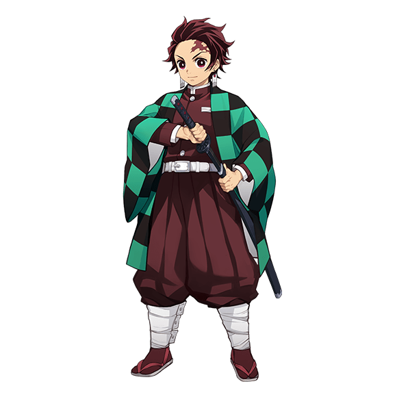

Tanjiro Kamado
Tanjiro Kamado is the main protagonist of Demon Slayer: Kimetsu no Yaiba. He is a Demon Slayer in the Demon Slayer Corps, who joined to find a remedy to turn his sister, Nezuko Kamado, back into a human and to hunt down and kill demons, and later swore to defeat Muzan Kibutsuji, the King of Demons, in order to prevent others from suffering the same fate as him. Before he became a Demon Slayer, Tanjiro was a coal burner before his entire family was slaughtered by Muzan while his younger sister, Nezuko, was turned into a demon.